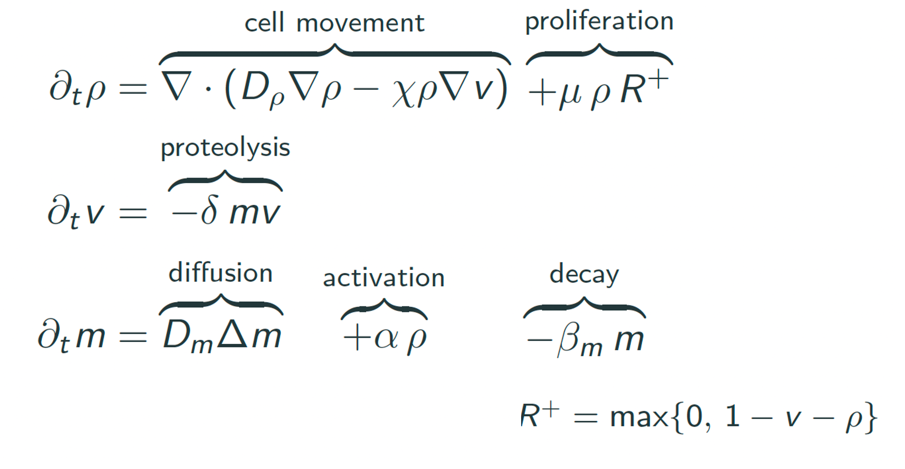
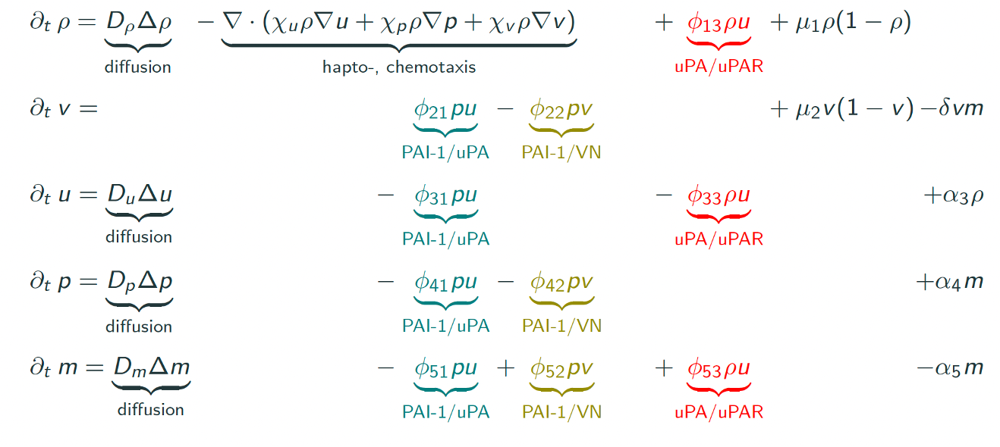
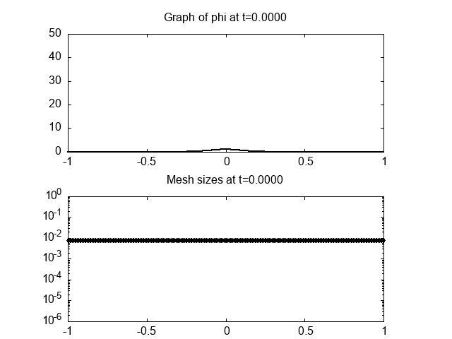
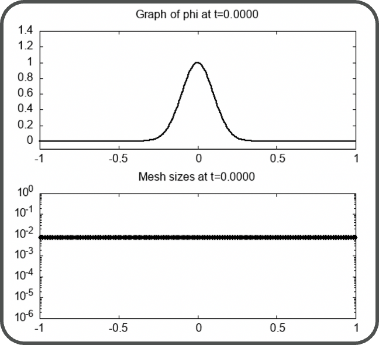
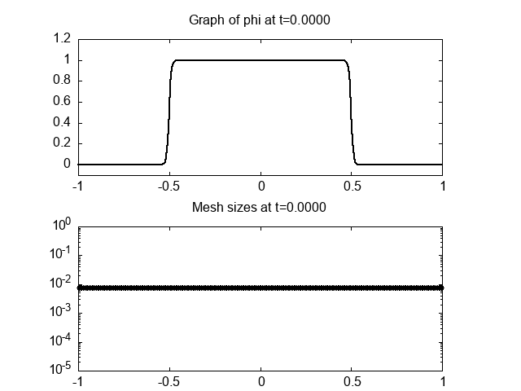
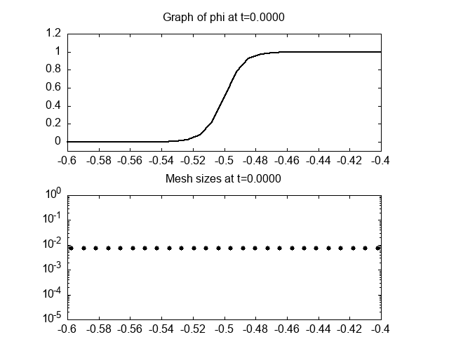

A conservative Lagrange–Galerkin moving-mesh method
PDE · numerical analysis · FEM · moving mesh
Initial
Later
Can we follow the peak, conserve mass, and prove how accurate the calculation is?
02 · Motivation
Moving localization
A coupled application leads to a transport problem with moving localization.
The uPA cancer-invasion system is the application horizon. The present analysis isolates the conservative convection–diffusion mechanism that its cell-density equation contains.
Numerical solution fields
Derivation from the characteristic ODE · BDF1 and BDF2 along XShowHide
Backward characteristic through (x,tn)
Along this curve, the advective derivative becomes an ordinary time derivative of the composition.
Composition: (v∘X1n)(x)=v(X1n(x)). The tilde remains attached to the entire two-step map .
This characteristic calculation explains the pullback locations. For the conservative density equation, the change of variables also contributes the Jacobians γn and , which appear in the mass-preserving operators above.
BDF1 characteristic approximation: Pironneau (1982), Süli (1988). BDF2 characteristic approximation: Boukir et al. (1997), Notsu & Tabata (2016a, 2016b).
Future application model · inspect the reduced and full uPA systems ShowHide


03 · Numerical challenge
Two bottlenecks, two mechanisms
Characteristic transport controls how information is advanced; mesh motion controls where the spatial degrees of freedom are placed.
Why both are needed
A robust transport step is necessary—but it does not create spatial resolution.
When ν is small, the PDE transports a narrow layer over long distances. Even a stable time update can remain inaccurate if a fixed grid has only a few nodes across that layer. LGMM therefore separates the problem into two jobs.
01
Transport bottleneck
When PeK≫1, how can we advance the conservative transport term without directly approximating a dominant Eulerian convection operator?
Convection-dominated regime
PeK = ‖u‖∞,K hK /(2ν) ≫ 1
the convective scale dominates the diffusive scale on element K
Departure pointX1n(x)
+
Compressionγn(x)
→
Conservative pullback(φn−1∘X1n)γn
Why LG works
compare the density along its physical trajectory
answers “where did the arriving density come from?”, while accounts for local compression and expansion. The dominant advective motion is handled by backtracking rather than by a direct Eulerian convection term.
02
Resolution bottleneck
As a moving profile sharpens, can a fixed set of uniformly placed P1 nodes still represent it without local over- and undershoots?
Computed solutionFixed LG · uniform mesh
under-resolved

Expected solutionSharp aggregate · schematic reference
physical profile
Interpretation: the sharp peaks are the expected aggregate; the ripples in the computed panel are numerical artifacts. Moving nodes lowers the local approximation scale around each peak.
Fixed uniform mesh
→
Representation failuresharp peak + spurious oscillation
→
Move the resolution
Why mesh motion works
reduce the local mesh size where the profile is difficult
hK(t) ↓ near steep P1-gradient jumps
The coordinates Pi(t) move and the space Ψh(t) changes with them. The same number of degrees of freedom is redistributed toward the moving structure, so the local approximation scale becomes finer where the profile has large variation.
physical transportLG moves informationbacktrack with X1n and γn
+
spatial resolutionmoving mesh moves nodescoordinates Pi(t)
→
combined methodLGMMrobust transport + moving resolution
Key distinction
The mechanisms are complementary, not interchangeable. LG determines how physical density is transported between time levels; the moving mesh determines where the finite-element space can represent that density accurately. The central analytical question is whether their combination retains geometry, mass, stability, and optimal accuracy.
Alternative numerical strategies · context for the design choice ShowHide
Adaptive refinement, stabilized Galerkin methods, discontinuous Galerkin methods, and high-resolution finite-volume methods are valid alternatives. LGMM asks a specific question: can the existing P1 degrees of freedom be relocated with the transported structure while retaining the conservative Lagrange–Galerkin framework and a sharp error estimate?
04 · Mathematical formulation
Conservative model
We study a conservative convection–diffusion problem that isolates the transport–diffusion mechanism behind the moving-resolution question.
Strong formulation · initial–boundary value problem
Find φ : Ω × (0,T) → ℝ such that
Weak form
Find φ(t) such that, for every test function ψ ∈ Ψ,
transport conservative divergence form
diffusion ν > 0
unknown density φ
05 · LG scheme
Mass-preserving LG
The conservative LG step backtracks density along characteristics and multiplies by the corresponding Jacobian.
Upwind mappings along characteristics
Mass-preserving second-order LG scheme
For given φh⁰ ∈ Ψh, find {φhⁿ ∈ Ψhⁿ; n = 1,…,NT} such that, for n = 1,…,NT,
LG1 / LG2 time operators · conservative difference operatorsShowHide
Rui & Tabata (2010): first-order mass-preserving LG. Futai et al. (2022): second-order mass-preserving LG.
07 · Characteristic transport
Characteristic transport and mesh movement
06 · Moving mesh method
Moving finite-element space
The nodal law used in LGMM follows the physical flow and adds a mesh-diffusion term; boundary vertices are fixed.
Mesh motion used in LGMM · time-continuous form
For t ∈ [0,T], let Pi(t), i=1,…,Np, be the nodal coordinates of the time-dependent mesh 𝒯h(t), with P1 basis functions φi(t), i=1,…,Np. For interior nodes,
The mesh regularization coefficient is νM. Boundary vertices remain fixed: Pi(t) ≡ Pi⁰ for i ∈ 𝓘Γ.
Inspired by the mass-transport method of Carrillo, Kolbe & Lukáčová-Medvid’ová (2019).
08 · Moving mesh in 1D
1D mesh law
Start from the continuous nodal motion, insert the two adjacent P1 gradients, and then discretize the spacing term semi-implicitly.
Continuous 1D form
For the interior nodes i=2,…,Np−1, the moving-mesh law becomes
The boundary nodes remain fixed: P1(t)=a and PNp(t)=b.
continuous node law→adjacent P1 gradients→semi-implicit time discretization
Semi-implicit discrete form
Adjacent P1 gradients · local origin of the spacing termShowHide
17 · Numerical experiment
1D test problem
A convection-dominated example separates the effect of fixed and moving spatial resolution.
Both computations use the same conservative LG temporal core and the same initial number of P1 degrees of freedom.
Problem data
∂tφ + ∂x(uφ) − ν∂xxφ = 0
in Ω = (−1,1)
- velocity
- u(x,t) = sin(2πx)
- diffusion
- ν = 10−5
- initial data
- φ⁰(x) = exp[−(1−cos x)/0.01]
- time interval
- T = 2
Discretization
initial meshuniform
h2 / 256
Δt10−4
elements256
maximum initial element Péclet number
Peh ≈ h /(2ν) ≈ 3.91 × 10²
The test is strongly convection-dominated from the initial uniform mesh.
Initial state · t = 0Localized profile on a uniform mesh

Controlled comparison
fixed LGuniform nodes remain fixed
LGMMthe same nodes evolve by the mesh law
Only the spatial placement changes.
Show expected dynamics · why peaks form near ±0.5 ShowHide
The velocity u(x)=sin(2πx) points away from x=0 toward the stable locations x=±0.5 on the two half-intervals. Conservative transport concentrates the initially central profile there, while ν=10−5 supplies only weak smoothing. The computation therefore creates narrow, moving concentration peaks that stress uniform spatial resolution.
18 · Numerical evidence
Fixed vs moving mesh
At the same nominal spatial dimension, changing node placement changes the resolved solution in this experiment.
Scrub or play the two uploaded computations in synchrony.
Numerical observation
Moving spatial resolution suppresses the oscillations seen in this fixed-mesh run.
Claim boundary
This comparison motivates LGMM; it is not a universal efficiency theorem against AMR or stabilized methods.
19 · Additional simulations
Beyond aggregation
Moving resolution also reacts to steep transitions that are not created by aggregation, while multidimensional motion exposes a separate mesh-quality problem.


Point of this example
LGMM is motivated by moving localized structure more broadly: narrow peaks are one case; steep fronts / corners are another resolution challenge.